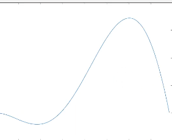
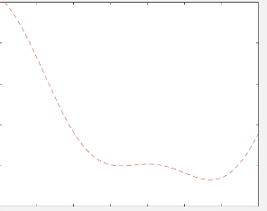
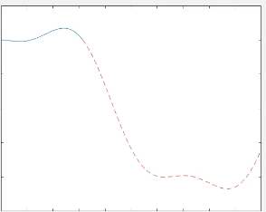
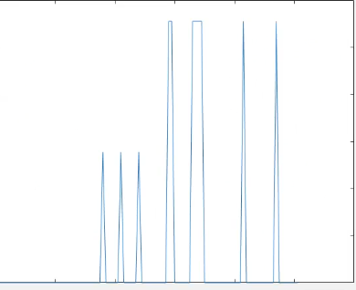

Registrazione delle Lezioni: Le registrazioni saranno disponibili su Wib (Webex) nel giro di qualche giorno.
Materiale del Laboratorio: Il testo del laboratorio sarà caricato prima della lezione, mentre le soluzioni saranno disponibili qualche giorno dopo.
Struttura del Corso: Il corso è diviso in due scaglioni, ma utilizza una singola pagina WVP. Le soluzioni saranno allineate con l’altro scaglione per evitare anticipazioni.
Comunicazione: La stanza di Webex sarà accessibile cercando “Giacomo Speroni”.
Introduzione a MATLAB
Interfaccia di MATLAB
Current Folder: La cartella di lavoro principale. È consigliabile creare una cartella specifica per il corso (ad esempio, “matematica_numerica_2425”).
Editor di Testo: Utilizzato per scrivere e modificare script MATLAB. È possibile eseguire il codice premendo il pulsante “Run” o F5.
Command Window: Terminale integrato per eseguire comandi riga per riga. Utile per comandi rapidi come help.
Workspace: Elenco delle variabili salvate in memoria.
Command History: Cronologia dei comandi eseguiti.
Variabili in MATLAB
MATLAB = Matrix Laboratory: MATLAB è progettato per il calcolo con matrici. Tutte le variabili sono matrici, anche gli scalari (che sono matrici 1x1).
Inizializzazione delle Variabili:
Non è necessario dichiarare il tipo di variabile.
Esempio: a = 1 inizializza una variabile reale.
Le stringhe vanno inserite tra virgolette.
Vettori e Matrici
Vettori: Possono essere inizializzati come liste di valori.
Esempio: v = [0, 1, 2, 3, 4, 5] crea un vettore con elementi da 0 a 5.
Inizializzazione con spaziatura: u = 0:1:100 crea un vettore da 0 a 100 con passo 1.
Controllo della lunghezza: linspace(x1, x2, n) crea un vettore con n elementi tra x1 e x2.
Matrici: Inizializzate con righe separate da punto e virgola o a capo.
Esempio:
A = [1, 2, 3; 4, 5, 6]
crea una matrice 2x3.
Operazioni con Matrici
Moltiplicazione: Le matrici devono essere compatibili (numero di colonne della prima = numero di righe della seconda).
Esempio: A * B dove A è 2x3 e B è 3x2.
Errore di Dimensioni: Se le matrici non sono compatibili, MATLAB restituisce un errore.
Punto e Virgola: Se omesso, MATLAB stampa il risultato nella Command Window.
Operazioni Elemento per Elemento
Operatore .*: Esegue operazioni elemento per elemento.
Esempio: B .* C moltiplica elemento per elemento.
Altre Operazioni: Somma, differenza, elevamento a potenza, ecc.
Funzioni Utili per Matrici
Determinante: det(A)
Traccia: trace(A)
Autovalori: eig(A)
Massimo e Minimo: max(v), min(v)
Norma: norm(v)
Formato delle Variabili
Precisione dei Numeri: MATLAB utilizza numeri in virgola mobile (floating point).
Visualizzazione delle Variabili:
format short: Poche cifre decimali.
format long: Molte cifre decimali.
format short e, format long e: Formato esponenziale.
Matrici Speciali
Matrice Nulla: zeros(m, n) crea una matrice mxn di zeri.
Matrice Identità: eye(n) crea una matrice identità nxn.
Matrice di Uni: ones(m, n) crea una matrice mxn di uni.
Diagonali:
diag(A) estrae la diagonale di A.
diag(v) crea una matrice diagonale con v sulla diagonale.
Parte Superiore e Inferiore di una Matrice
Triangolare Superiore: triu(A)
Triangolare Inferiore: tril(A)
Pulizia della Workspace
da inserire sempre all’inizio degli script
Comando clear all: Cancella tutte le variabili salvate.
Comando close all: Chiude tutte le finestre grafiche.
Comandoclc
clc
clear all
close all
-continua
importanza dei vettori colonna
o comunque fare caso se ti ritrovi con dei vettori riga o colonna nel caso.
Grafici in MATLAB
Creazione di un Grafico
Definizione dell’Intervallo:
a = 0;b = pi / 2;xx = [a:0.01:b]; %quanto fitta facciamo la funzione? la scelta deve essere ragionevole, la distanza di 0.01 può andare bene
Calcolo delle Ordinate:
yy = sin(x).^3 + cos(x); %crea un vettore a cui ogni componente applica questa operazione
è diverso elevare ^3 (che fa il cubo di un vettore) e .^3 (che fa il cubo di ogni singolo termine del vettore)
Plot del Grafico:
plot(xx, yy);

-con passo di 0.5
vogliamo definire un nuovo intervallo
un I2=[pi/2,5]
xx2= [pi/2:0.01:5];yy2 = sin(xx).^3 + cos(xx2) %uguale ma inserisco la nuova ascissa%inserisco un nuovo plot (tratteggiato di rosso)plot(xx2,yy2, 'r--'):
lo runno

ma mi ha cancellato il plot di prima
Utilizzo di hold on
Mantenere più Grafici: hold on permette di sovrapporre più grafici nella stessa finestra.

Funzioni Anonime
Definizione di una Funzione Anonima:
y = @(x) sin(x).^3 + cos(x); % x può essere qualunque cosa
Utilizzo della Funzione:
plot(xx, yy(xx));hold on plot(xx2, yy(xx2));
Funzioni in MATLAB
Definizione di una Funzione
Sintassi:
function [out1, out2] = namefunction(inpt1, inpt2, inpt3)
% Operazioni sulla base degli input
out1= 0;
out2 = 0;
if (inpt3 == 1 )
out1 = inpt1 + inpt2;
out2 = 0;
else
for i= 0:1:5
out1= i+out1;
out2= 5:
end
end
`end
Salvataggio: La funzione deve essere salvata con lo stesso nome del file (myfunction.m).
esempio:
function [out1, out2] = namefunction(inpt1, inpt2, inpt3) out1= inpend
Chiamata di una Funzione
Esempio di Chiamata:
[out1, out2] = myfunction(1, 2, 1);
Problemi Numerici in MATLAB
Precisione della Macchina
matlab funziona con floating point
Epsilon della Macchina: Distanza tra 1 e il numero successivo rappresentabile.
eps restituisce questa distanza.
Esempio:
1 + eps(1) % Restituisce un numero diverso da 11 + eps(1) / 2 % Restituisce 1 (non si sposta)
Limiti dei Numeri Rappresentabili
Realmin e Realmax:
realmin: Numero più piccolo rappresentabile.
realmax: Numero più grande rappresentabile.
Esempi di Errori Numerici
Differenza tra Vettori:
a =[0:0.01:1];b = linspace(0, 1, 101);plot(abs(a - b)); %se faccio la loro diff in val assoluto plot (abs(a-b))
Anche se a e b sembrano uguali, ci sono piccole differenze dovute alla rappresentazione numerica.

Errore di Cancellazione:
x = 1e-15; %10^(-15)result = ((x + 1) - 1)/x;
Il risultato non è 1 a causa della cancellazione numerica.